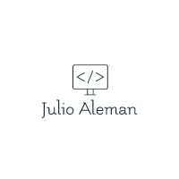

Overview
Purpose
The main purpose of my site plan is to showcase a portfolio of my skills, knowledges, like if it were a professional curriculum in a digital format.
Audience
Intended for future employer, human resources recruiter, additional information of my resume.
Branding
Website Logo
Style Guide
Color Palette
Palette URL: https://coolors.co/b7bfc1-343637-a2221d-0c0c0c| Primary | Secondary | Accent 1 | Accent 2 |
|---|---|---|---|
| [#343637] | [#0C0C0C] | [#d12d27] | [#c6cdcf] |
Typography
Heading Font: [Open Sans]
Paragraph Font: [Montserrat]
Site plan text
Welcome to my page and thanks for your interest. In this web site portfolio, you will find information about me, my resumes and projects I have done in the past courses. The main purpose its to show and prove what I have learn and present it to you in a digital version than a traditional resume can be.
The fist page is home, in the home page can be found the title, introduction, overview(purpose) of the site plus the main topic of this site plan. The second page is: Resumes, it contains information about my academic formation, skills and work experience and profile in a chronological way. The main parts described in resume: Profile: Being a bridge between the business, problems and technology solutions starting from process documentation, tool development and critical thinking with BI tools for decision making concluding with process implementation and constant renewal under my supervision. Education and skills: System Engineer career. With skills on: Databases, Computer Hardware, networks, Microsoft Office, Operating Systems, Power BI, Power Pivot. Process planning and logistics. -WORK EXPERIENCE (chronological): FedEx Operations Manager. 2011- Aug 2019 Customs, Logistics and customer service personnel Manager, review and analyze performance and production results using IT tools. Yearly Goals planning, Supervision of quality programs. Ensure and prevent service metrics drops under company ISO standards. Results reporting to general management, Perform internal audits and trainings, company legal representative for DGA (Direccion general de aduanas) FedEx Management Consultant. 2009-2010 Project manager, Software development supervisor. FedEx Customs Supervisor. 2008-2009 Import and export supervisor, personnel management FedEx IT Manager 2007-2008 IT Manager FedEx Nicaragua, database administrator, accounting system, billing, security cameras, software developer, technical and managed networks, technical repair and maintenance of computers. Tica Bus. Customer Service Agent 2007 Customer service counter support, call center. HOBBIES -Aquarist. -Boxing -swimming. -Judo -Technology. -self-taught person. The third page is: My projects In My Projects you will find the most recent projects made in Python code during the course: “Programing with functions” I currently which I am currently studying at BYU, also shows some projects made in databases and logistics.Colored paragraph example
Website main Pages (3) that are listed below: Home, Resumes, My projects. This 3 pages will show the main information about me, my skills, my academic formation, my work experience and my projects. The main purpose of this site is to show my skills and knowledge in a digital format than a traditional resume can be.
Navigation
Site Map
Content
Home page
Home page will contain the title, introduction, overview(purpose) of the site plus the main topic of this site plan.
Images for the Home page


Resumes
Resumes page will contain information about my academic formation, skills and work experience and profile in a chronological way.
Images for Resumes page


My projects
My projects page will contain the most recent projects made in Python code during the course: “Programing with functions” which I am currently studying at BYU, also explain some projects made in databases and logistics.
Images for My projects page


Wireframes
Create three wireframes for your site. One for each page and list them here
Home
Home wireframe, it contains the title, introduction, overview(purpose) of the site plus the main topic of this site plan.

Resumes
Resumes wireframe, it contains information about my academic formation, skills and work experience.

My Projects
My projects wireframe, it contains the most recent projects made in Python code during the course and some logistics projects I made in the past.